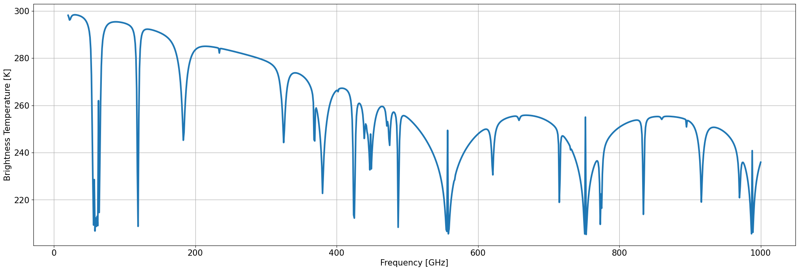

My first test with PyRTlib#
Installing PyRTlib via pip. Note that the following command will also install all requirements to execute properly PyRTlib package. It is possible to test development version by installing the package directly from github repository.
!pip install https://github.com/SatCloP/pyrtlib/archive/refs/heads/dev.zip
[1]:
!pip install pyrtlib
Defaulting to user installation because normal site-packages is not writeable
Collecting pyrtlib
Downloading pyrtlib-1.0.7-py3-none-any.whl (228 kB)
━━━━━━━━━━━━━━━━━━━━━━━━━━━━━━━━━━━━━━━ 228.1/228.1 KB 6.2 MB/s eta 0:00:00
Requirement already satisfied: netCDF4 in /home/runner/.local/lib/python3.10/site-packages (from pyrtlib) (1.6.5)
Requirement already satisfied: scikit-learn in /home/runner/.local/lib/python3.10/site-packages (from pyrtlib) (1.5.0)
Requirement already satisfied: numpy in /home/runner/.local/lib/python3.10/site-packages (from pyrtlib) (1.26.4)
Requirement already satisfied: requests in /usr/lib/python3/dist-packages (from pyrtlib) (2.25.1)
Requirement already satisfied: scipy in /home/runner/.local/lib/python3.10/site-packages (from pyrtlib) (1.13.1)
Requirement already satisfied: setuptools in /usr/lib/python3/dist-packages (from pyrtlib) (59.6.0)
Requirement already satisfied: pandas in /home/runner/.local/lib/python3.10/site-packages (from pyrtlib) (2.2.2)
Collecting bs4
Downloading bs4-0.0.2-py2.py3-none-any.whl (1.2 kB)
Requirement already satisfied: beautifulsoup4 in /home/runner/.local/lib/python3.10/site-packages (from bs4->pyrtlib) (4.12.3)
Requirement already satisfied: certifi in /usr/lib/python3/dist-packages (from netCDF4->pyrtlib) (2020.6.20)
Requirement already satisfied: cftime in /home/runner/.local/lib/python3.10/site-packages (from netCDF4->pyrtlib) (1.6.3)
Requirement already satisfied: python-dateutil>=2.8.2 in /home/runner/.local/lib/python3.10/site-packages (from pandas->pyrtlib) (2.9.0.post0)
Requirement already satisfied: tzdata>=2022.7 in /home/runner/.local/lib/python3.10/site-packages (from pandas->pyrtlib) (2024.1)
Requirement already satisfied: pytz>=2020.1 in /usr/lib/python3/dist-packages (from pandas->pyrtlib) (2022.1)
Requirement already satisfied: threadpoolctl>=3.1.0 in /home/runner/.local/lib/python3.10/site-packages (from scikit-learn->pyrtlib) (3.5.0)
Requirement already satisfied: joblib>=1.2.0 in /home/runner/.local/lib/python3.10/site-packages (from scikit-learn->pyrtlib) (1.4.2)
Requirement already satisfied: six>=1.5 in /usr/lib/python3/dist-packages (from python-dateutil>=2.8.2->pandas->pyrtlib) (1.16.0)
Requirement already satisfied: soupsieve>1.2 in /home/runner/.local/lib/python3.10/site-packages (from beautifulsoup4->bs4->pyrtlib) (2.5)
Installing collected packages: bs4, pyrtlib
Successfully installed bs4-0.0.2 pyrtlib-1.0.7
Import necessary packages to perform and plotting your first spectrum in PyRTlib.
[2]:
# This requires jupyter-matplotlib a.k.a. ipympl.
# ipympl can be install via pip or conda.
%matplotlib inline
import matplotlib.pyplot as plt
plt.rcParams.update({'font.size': 15})
import numpy as np
Load standard climnatology and utils functions necessary to run the code.
[3]:
from pyrtlib.absorption_model import O2AbsModel
from pyrtlib.climatology import AtmosphericProfiles as atmp
from pyrtlib.tb_spectrum import TbCloudRTE
from pyrtlib.utils import ppmv2gkg, mr2rh
The following code allows to performing spectra for one typical climatologies (Tropical) at 90° elevation angles. Please refer to the PyRTlib documentation for more details on how to use the library.
[4]:
z, p, _, t, md = atmp.gl_atm(atmp.TROPICAL)
gkg = ppmv2gkg(md[:, atmp.H2O], atmp.H2O)
rh = mr2rh(p, t, gkg)[0] / 100
frq = np.arange(20, 1001, 1)
rte = TbCloudRTE(z, p, t, rh, frq)
rte.init_absmdl('R22SD')
O2AbsModel.model = 'R22'
O2AbsModel.set_ll()
df = rte.execute()
df = df.set_index(frq)
Plotting zenith upwelling brigthness temperature.
[5]:
df.tbtotal.plot(figsize=(25, 8), linewidth=3, xlabel="Frequency [GHz]", ylabel="Brightness Temperature [K]", grid=True)
[5]:
<Axes: xlabel='Frequency [GHz]', ylabel='Brightness Temperature [K]'>
